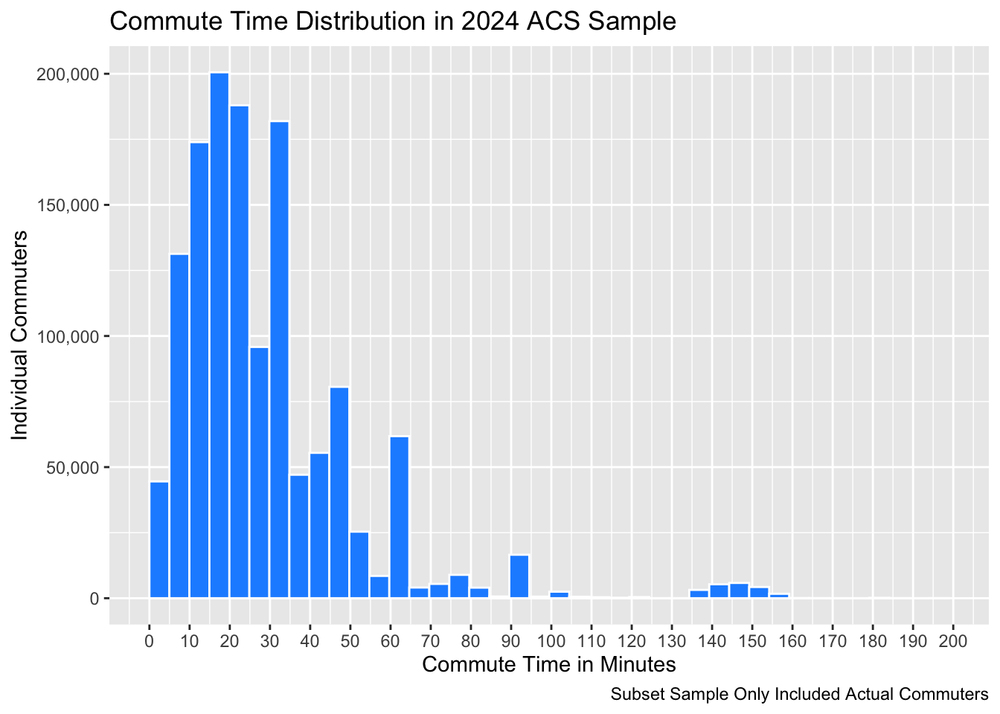

TRANTIME is a 3-digit numeric variable reporting the total amount of time, in minutes, that it usually took the respondent to get from home to work last week. Therefore, a value of 0 in TRANTIME means “N/A”. Or, in other words, that the individual works from home, does not work, or for any other reason does not commute to work.
Additionally, PERWT is a 6-digit numeric variable indicating how many people in the U.S. population are represented by a given person in an IPUMS sample. More specifically, PERWT tells us how much each person weighs in the data. As mentioned in lecture, sometimes we weigh some individuals (such as minorities) more heavily than others because we lack more of them needed to be representative of our population. For example, if we lack Hispanics in our sample, and needed more to be representative of the U.S. population, then we weigh the Hispanics in the sample more heavily. Additionally, it should be noted that PERWT has two implied decimals. For example, a PERWT value of 010461 should be interpreted as 104.61.
If we treated 0 or 99 which in this data set, represents “N/A” rather than a true value, then any manipulation of the data is going to be incorrect. More specifically, a very low value of 0 or a high value of 99 will impact our summary statistics such as our averages, ranges, medians, etc. However, we don’t want them to since they do not represent a true value.
For example, with our SEX variable, we have the numeric values of either 1 for male, 2 for female, or 9 for N/A. Therefore, we have to remove the variable 9 because it does not represent a true value. If we keep it in our data set, our summary statistics will be incorrectly skewed up. In other words, all of our values will be incorrectly higher than they should be.
The maximum commute time of 195 minutes, or an hour and 15 minutes make sense for a daily commute time. At least for me, I am from rural Oregon and in the town Bandon, Oregon where I am from, many, many people commute almost two hours to get to work everyday from neighboring towns like Port Orford and Myrtle Point. Additionally, we expect our maximum commute time to be relatively high because it is quite literally the highest commute time value we have of a very, very large sample (3422888). With this many samples, it is very likely that we are going to have at least one sample that is an extreme.
These individuals (2062945 or about 60.3% of the total of respondents) with commune times of 0 are either people who work from home, individuals who do not work, their commute times are under a minute total, or are N/A.
I chose to filter out all of the individuals who have a commute time that is more than 0. Simply put, if we want to study the commute time of individuals, then we need people with commute times to study. In other words, we need to only keep in our data set people who have commute times above 0 minutes. A similar way to think about this is if we wanted to study Harvard students. If we did, then we would need to filter from a data set the students who go to Harvard.
After we have filtered out people who have a commute time above 0, we go from 3422888 respondents to only 1359943, losing about 60.3% of of our original group. The new minimum is now a commute time of 1 minute. This makes sense because we removed all the 0s from our original data set, which means that that next lowest possible commute time someone could have is 1. And surely enough, it appears that someone does have a commute time of 1 in our new subset.
Table 2: Summary Statistics for 2024 ACS Sample (Only Keeping Actual Commuters)
Variable
N
Mean
SD
Min
Max
Age
1359943
43.4
15.3
16
96
Female
1359943
0.5
0.5
0
1
Less Than Highschool
1359943
0.1
0.2
0
1
High School Only
1359943
0.3
0.5
0
1
Some College
1359943
0.2
0.4
0
1
College Only
1359943
0.2
0.4
0
1
Advanced Degree
1359943
0.2
0.4
0
1
Employed
1359943
1.0
0.0
1
1
Unemployed
1359943
0.0
0.0
0
0
Not in Labor Force
1359943
0.0
0.0
0
0
Commute Time (mins)
1359943
27.2
23.3
1
195
Total Income ($)
1359943
72992.7
88726.0
-11500
1945000
Question 4.1
library(ggplot2)library(scales)
Attaching package: 'scales'
The following object is masked from 'package:purrr':
discard
The following object is masked from 'package:readr':
col_factor
actual_commuters_subset_histogram <-ggplot(data = actual_commuters_subset,mapping =aes(x = TRANTIME)) +geom_histogram(bins =40, boundary =0, fill ="dodgerblue", color ="white") +labs(x ="Commute Time in Minutes", y ="Individual Commuters", title ="Commute Time Distribution in 2024 ACS Sample", caption ="Subset Sample Only Included Actual Commuters") +scale_x_continuous(breaks =seq(0, 200, by =10)) +scale_y_continuous(labels = comma)print(actual_commuters_subset_histogram)

Question 4.2
In my histogram, we can see that that it is very much right skewed, or more specifically, that the majority of actual commuters have a commute time of around 5 minutes to 35 minutes. Notably, there is a dramatic decline in the number of respondents after 35 minutes, and then another large decline after about 65 minutes. Lastly, there are a few outliers visible on the graph around 135 minutes to 160 minutes.
From my summary statistics table, I can see that my mean is about 27.2. Additionally, I can calculate my median which is 20. Comparing these two, we an see that the average for actual commuters is higher than the median number (middle value). This is most likely because the mean is taking into account those few outliers we had around the 135-160 minute mark. This tells me that my distribution is right skewed and yes, it does match with what I see in my histogram.
The weighted mean is very similar to the unweighted mean I calculated earlier. The difference is only about 0.02.
Question 5.3
The unweighted mean of 27.215 shows us the average of our sample population which is a subset (only having actual commuters) of our original ACS 2024 sample data set. On the other hand, our weighted commute time takes into account how many people in the actual U.S. population one of our sample individuals represents. More specifically then, the weighted mean of 27.191 tells us the best estimate for the average commute time in the U.S. population (not our sample population). And it does so by using the PERWT variable.